Welcome: Images Can Be Prompts Too
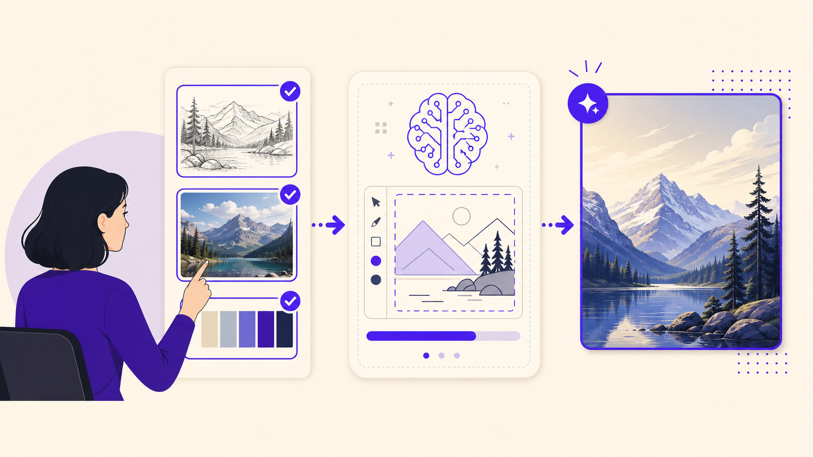
In Lesson 8, you move beyond text-only prompting. Your mission is to decide what a visual input should control, what the written prompt should control, and how much freedom the model should have.
Learning Objectives
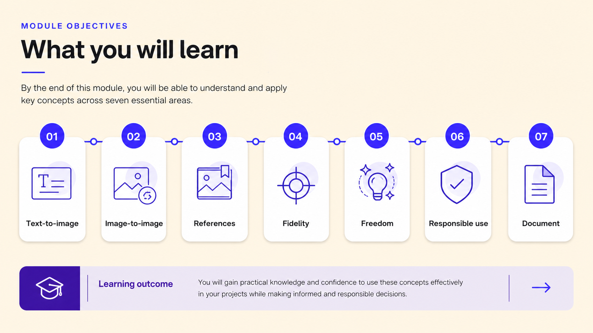
- Explain the difference between text-to-image and image-to-image generation.
- Use sketches, wireframes, or low-detail visual inputs to guide image generation.
- Identify style, composition, color, subject, lighting, pose, and environment references.
- Understand the balance between fidelity and freedom.
- Write prompts that specify what the model should preserve, transform, and avoid.
- Use reference images responsibly without copying protected, personal, branded, or inappropriate material.
- Generate controlled interpretations from the same sketch or reference.
- Document the relationship between input image, prompt, settings, and final output.
Lesson Map: From Text Prompt to Image-Guided Control
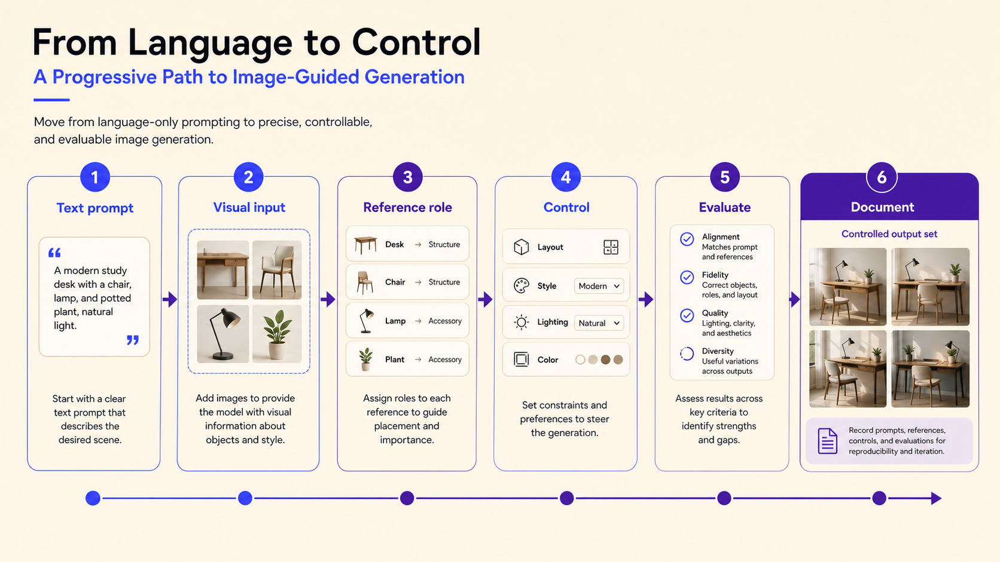
| Screen / mission | Interaction type | Main skill |
|---|---|---|
| 1. Welcome and mission brief | Orientation + checklist | Understand that images can also act as prompts. |
| 2. Text-to-image vs image-to-image | Gap-fill + comparison | Distinguish language-only prompting from image-guided prompting. |
| 3. Visual inputs gallery | Flashcards + sorting | Identify sketches, wireframes, photos, mockups, and references. |
| 4. Reference role detective | Matching / classification | Decide what a reference should control. |
| 5. Sketch as composition control | Hotspot + mini sketch | Use sketch elements to guide layout and spatial structure. |
| 6. Prompt the reference | Gap-fill prompt builder | Specify preserve, transform, and avoid. |
| 7. One sketch, three interpretations | Hands-on comparison lab | Generate controlled style interpretations from one visual input. |
| 8. Fidelity vs freedom slider | Decision challenge | Choose the right level of reference influence. |
| 9. Responsible reference use | Decision tree + scenario cards | Avoid copying, identity misuse, brand imitation, and unsafe references. |
| 10. Documentation board | Form-fill / checklist | Record source, permission, purpose, settings, outputs, and evaluation. |
| 11. Final Boss | Mini project | Create and justify one responsible image-guided workflow. |
Images as Prompts: From Text-to-Image to Image-to-Image
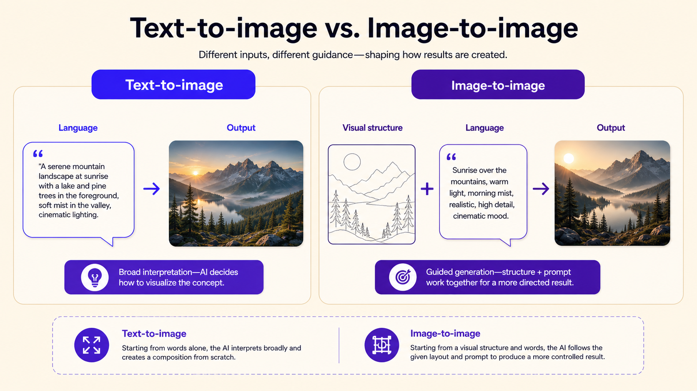
Text-to-image generation creates an image primarily from written language. Image-to-image generation adds a visual input: a sketch, photograph, wireframe, screenshot, design mockup, previous AI output, or collage. The prompt still matters, but the image gives the model a structural or visual starting point.
Visual Inputs and What They Can Control
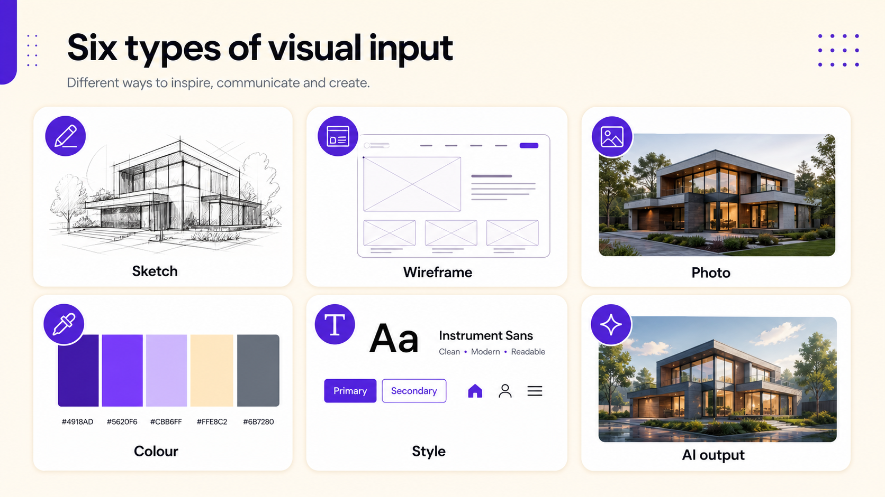
Not every visual input has the same function. A sketch may control composition, a wireframe may control layout, a photograph may control lighting or perspective, and a color reference may control mood.
| Visual input | What it can control | Risk to manage |
|---|---|---|
| Sketch | Placement, scale, rough pose, spatial structure. | Too vague may be ignored; too detailed may restrict exploration. |
| Wireframe | Layout, hierarchy, negative space, aspect ratio. | The model may fill reserved spaces with fake text or clutter. |
| Photograph | Perspective, lighting, pose, environment, color mood. | May copy subject matter or identity if not constrained. |
| Color reference | Palette, temperature, contrast, atmosphere. | The model may copy objects unless told to use color only. |
| Style reference | Texture, medium, realism level, visual language. | Can become imitation of a living artist or protected visual identity. |
| Previous AI output | Composition, character attempt, style direction, draft to refine. | Errors may be carried forward if not diagnosed. |
References, Fidelity, and Creative Control
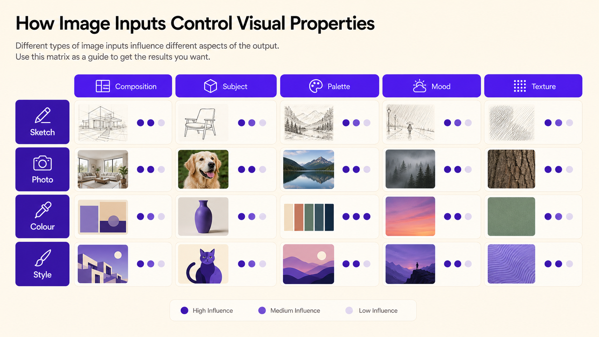
A reference image can guide style, composition, color, subject, lighting, pose, or environment. The key is to define the role clearly: a reference should mean “use this image for a specific kind of guidance,” not “copy this image.”
Activity: Reference Role Detective
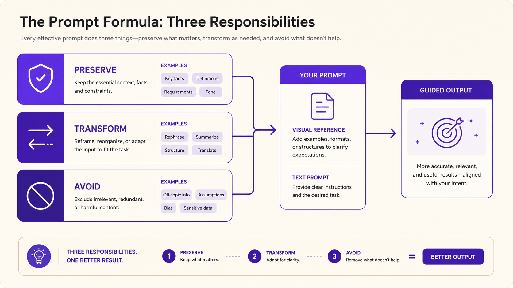
For each scenario, choose the reference role and one responsible-use risk.
Sketch as Composition Control
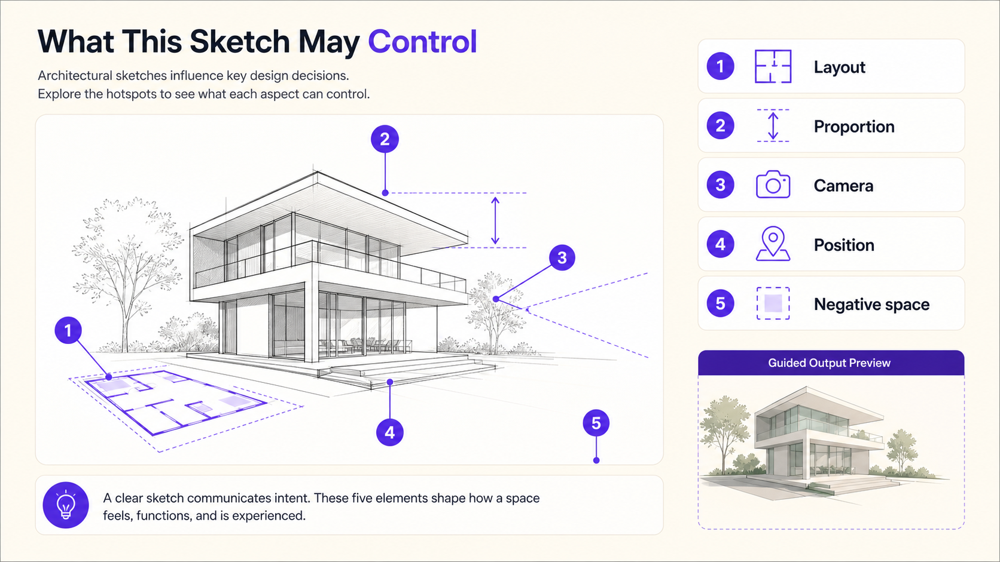
A sketch does not need polished drawing quality. Its value is control. It can show where the subject should be placed, where empty space should remain, and how the composition should be organized.
| Hotspot | Learner marks | What it controls | Feedback |
|---|---|---|---|
| A | Main subject position | Subject placement | If the subject moves too much, the sketch is not functioning as a composition guide. |
| B | Screen or focal object | Visual hierarchy | Important objects should be large and clearly positioned. |
| C | Empty wall or title area | Negative space | Tell the model to preserve clean empty space and avoid text. |
| D | Foreground object | Depth and framing | Foreground elements can create a more photographic composition. |
| E | Camera angle / horizon | Perspective | A stronger sketch can communicate viewpoint better than words alone. |
Activity: Prompt the Reference
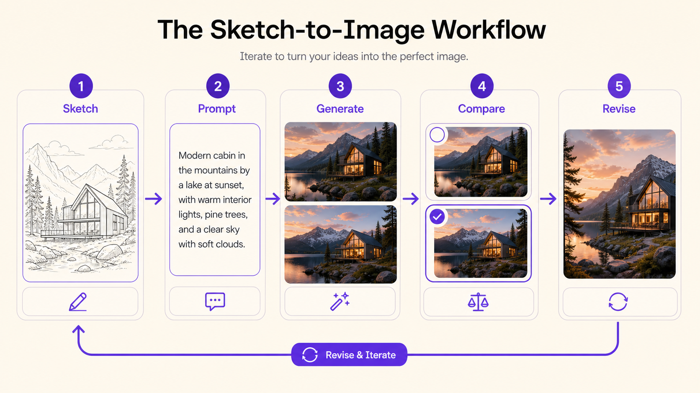
Complete the scaffold, then rewrite it as one clean image-generation prompt.
| Prompt part | Your answer |
|---|---|
| Use this input as a guide for... | |
| Preserve these elements... | |
| Transform these elements... | |
| Add these visual details... | |
| Use this style and lighting... | |
| Avoid copying or generating... | |
| Final prompt version |
Sketch as Composition Control Lab
Choose one scene: AI photography studio, AI design classroom, or audiovisual preproduction workspace. Create a rough sketch and begin the prompt with: “Use this sketch as a composition guide.”
| Sketch element | Did the output preserve it? | Evidence | Next improvement |
|---|---|---|---|
| Main subject placement | |||
| Background structure | |||
| Foreground elements | |||
| Camera angle / perspective | |||
| Empty space for typography | |||
| No text / no logos constraint |
One Sketch, Three Interpretations
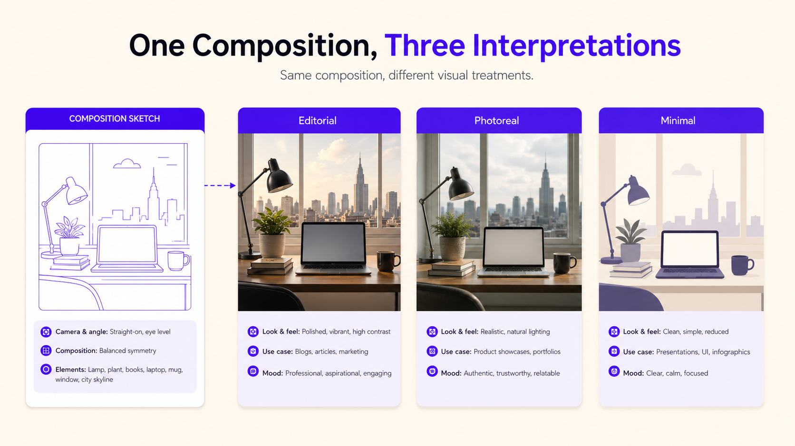
Use the same sketch for all three generations. Keep subject, layout, and main prompt stable. Change only the style terms.
| Version | Style terms to add | What should stay stable | Expected feedback focus |
|---|---|---|---|
| 1 | realistic editorial photography, natural light, shallow depth of field | Sketch layout, subject position, empty space | Check whether the layout survives realistic rendering. |
| 2 | clean editorial illustration, simplified shapes, flat colors, modern educational design | Sketch layout, subject position, empty space | Check whether simplification improves communication. |
| 3 | cinematic concept art, dramatic lighting, atmospheric depth, film still composition | Sketch layout, subject position, empty space | Check whether style transformation creates atmosphere or loses control. |
| Criterion | Version 1 | Version 2 | Version 3 | Best version |
|---|---|---|---|---|
| Composition follows sketch | ||||
| Style clarity | ||||
| Visual communication | ||||
| Technical errors | ||||
| Use for poster / slide / storyboard |
Reference for Color and Mood
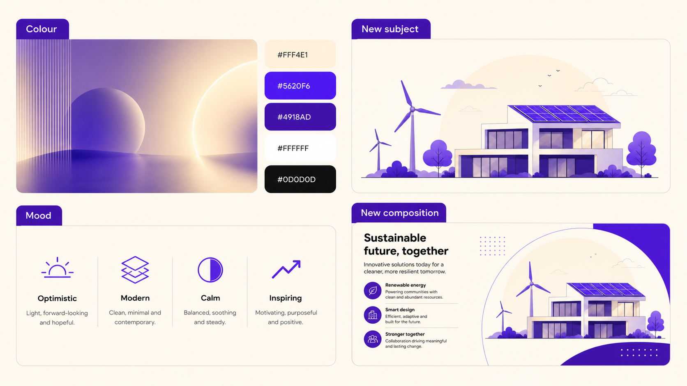
Choose or create a safe reference image. Write exactly what it should control: color, mood, lighting, or atmosphere.
| Reference source | Permission / license status | Reference purpose | Elements to preserve | Elements to avoid copying | Evaluation notes |
|---|---|---|---|---|---|
| Color / mood / lighting / atmosphere |
Fidelity vs Freedom Test
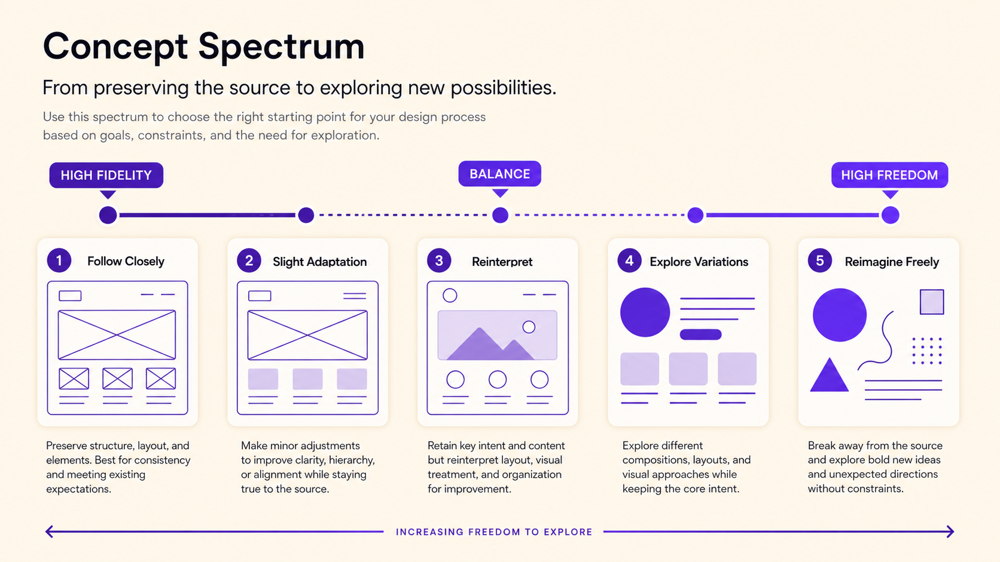
Use the same input image for all versions. Generate or plan three versions: high fidelity, balanced, and high freedom. Keep prompt, subject, style, and tool as stable as possible.
| Version | Reference influence | Best for | What to observe |
|---|---|---|---|
| A | High fidelity / strong reference | Production when layout, pose, or product shape must remain close | Does it preserve structure? Does it copy too much? |
| B | Balanced | Controlled creative development | Does it preserve key elements while improving style or mood? |
| C | High freedom / weak reference | Early ideation and exploration | Does it create useful surprise or lose the brief? |
| Version | What stayed from the input? | What changed? | Useful for production? | Useful for ideation? | Next decision |
|---|---|---|---|---|---|
| A | |||||
| B | |||||
| C |
Responsible Reference Use Decision Room
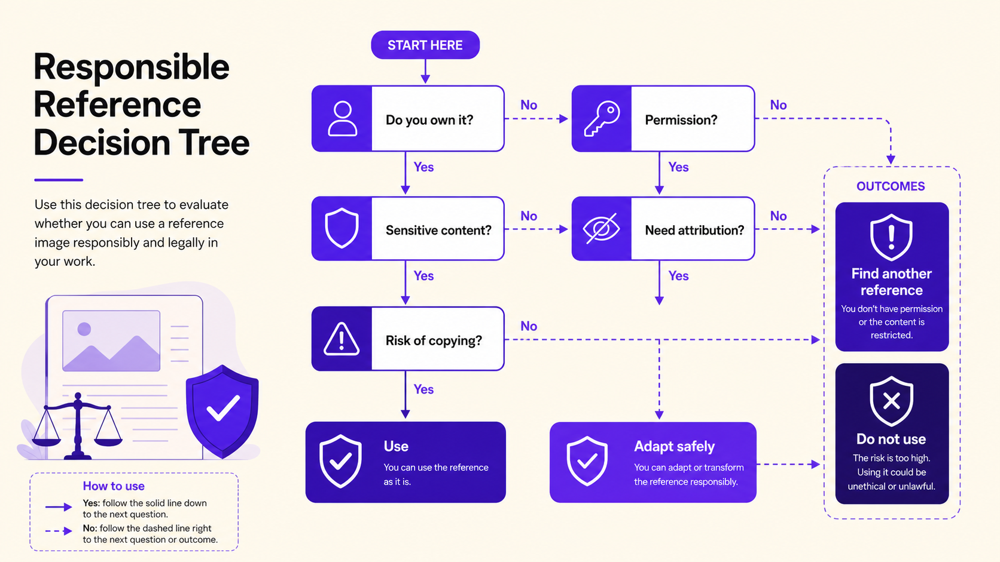
Your team must choose the safest door for each reference scenario: PROCEED, REVISE, SEEK PERMISSION, DISCLOSE, or REFUSE. Justify every decision.
Documentation Board for Image-Guided Generation
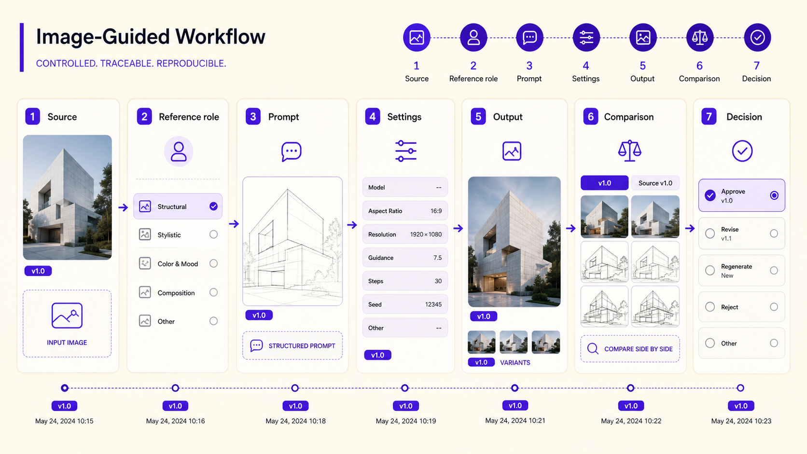
Complete the documentation board for one image-guided generation attempt. Keep notes concise but specific enough that another student could understand your process.
| Documentation field | Your notes |
|---|---|
| Input image source and ownership | |
| Permission / license / consent status | |
| Reference purpose: composition, color, style, lighting, pose, environment, other | |
| Prompt used | |
| What to preserve | |
| What to transform | |
| What to avoid copying | |
| Tool and visible settings | |
| Output strengths | |
| Output problems | |
| Next revision decision |
Final Boss Challenge: Guide, Transform, Document
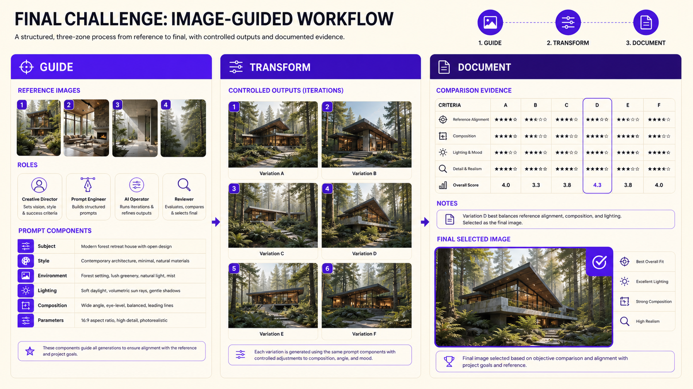
| Part | Learner task | Completion evidence |
|---|---|---|
| A. Select input | Choose a safe visual input and document its source. | |
| B. Define input role | State whether it controls composition, color, lighting, pose, mood, or layout. | |
| C. Write prompt | Use the preserve / transform / avoid formula. | |
| D. Generate or simulate | Generate the image if possible, or describe expected output. | |
| E. Evaluate | Compare input and output for fidelity, freedom, originality, and technical quality. | |
| F. Explain | Prepare a 60-second process explanation. |
| Evaluation criterion | Your answer |
|---|---|
| What did the visual input control? | |
| What did the written prompt control? | |
| What was preserved? | |
| What was transformed? | |
| What was avoided for responsible use? | |
| Was fidelity or freedom more important? Why? | |
| What would you revise next? |
Final Assessment
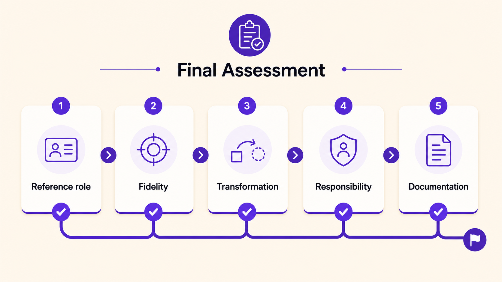
Short answer
| Question | Your answer |
|---|---|
| Explain the difference between fidelity and freedom in image-guided generation. | |
| Write a responsible reference prompt that uses a photograph only for color and mood, not for copying subject matter. |
Exit Ticket and Completion
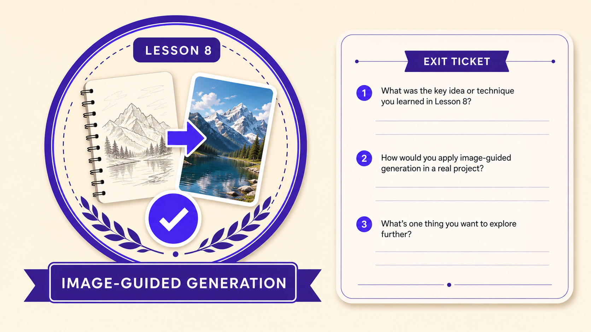
Image-guided generation expands prompting beyond words. The central creative decision is the balance between fidelity and freedom, supported by responsible reference use and process documentation.
| Prompt | Your answer |
|---|---|
| One visual input I can use safely is... | |
| One thing a reference can control is... | |
| One thing I should avoid copying from a reference is... | |
| For my next image-guided workflow, I would choose high fidelity / balanced / high freedom because... |
| Task | Complete |
|---|---|
| Completed the workflow gap-fill and matching task. | ☐ |
| Identified visual input types using flashcards. | ☐ |
| Matched reference types to what they control. | ☐ |
| Completed the sketch hotspot activity. | ☐ |
| Wrote a reference prompt using preserve / transform / avoid. | ☐ |
| Completed or planned the sketch-to-image lab. | ☐ |
| Compared three interpretations from one sketch. | ☐ |
| Made responsible-use decisions for reference scenarios. | ☐ |
| Completed the documentation board. | ☐ |
| Completed the final assessment and exit ticket. | ☐ |